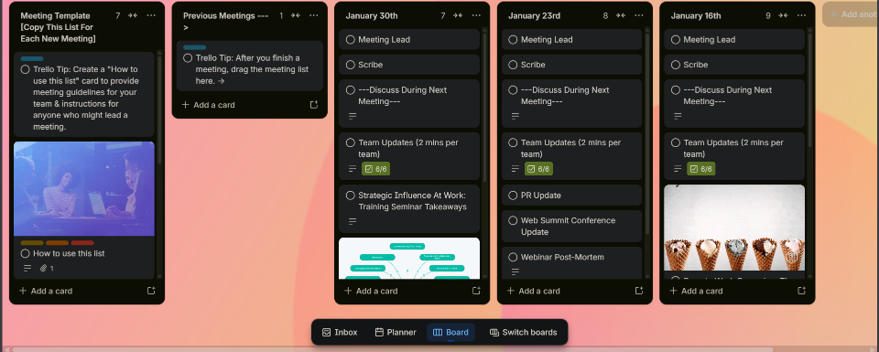
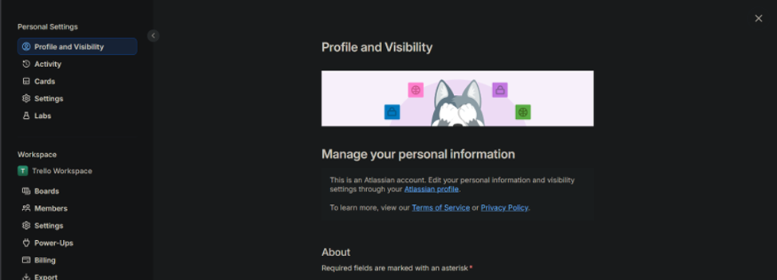
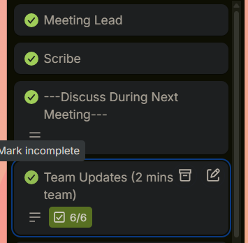
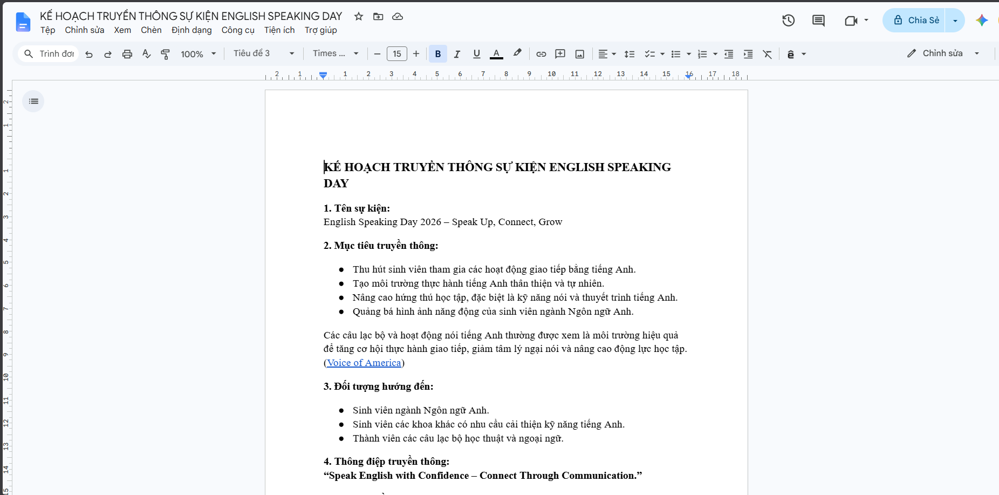
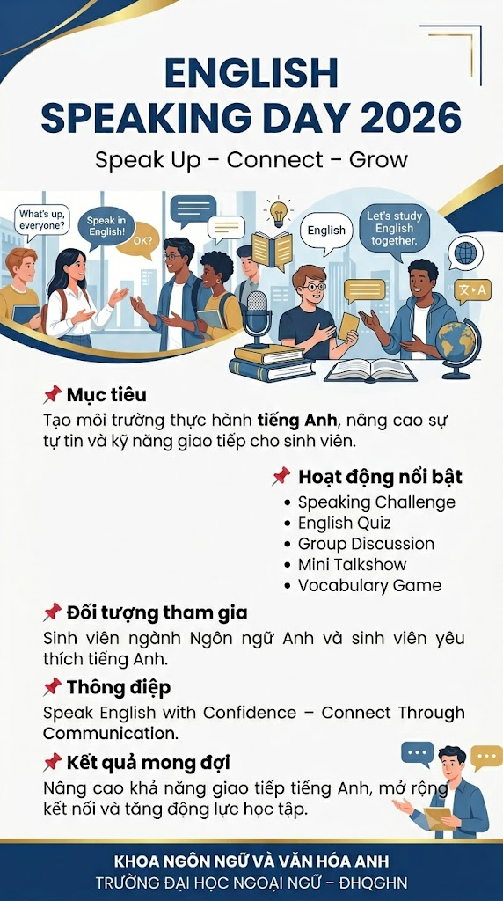

ĐẠI HỌC QUỐC GIA HÀ NỘI
TRƯỜNG ĐẠI HỌC NGOẠI NGỮ

BÁO CÁO CÁ NHÂN
SỬ DỤNG CÔNG CỤ TRỰC TUYẾN TRONG HỢP TÁC NHÓM
| Sinh viên | Hoàng Chu Mỹ Anh |
|---|---|
| Ngành | Ngôn ngữ Anh |
| Khoa | Ngôn ngữ và Văn hóa Anh |
| Trường | Trường Đại học Ngoại ngữ - ĐHQGHN |
| Mã sinh viên | 25040391 |
| Lớp | VNU1001_E252058 |
Hà Nội, 2026.
1. Thông tin chung và bối cảnh thực hiện
Bài báo cáo này trình bày quá trình cá nhân tham gia thiết lập, sử dụng và quản lý các công cụ hợp tác trực tuyến trong một dự án nhóm nhỏ. Trọng tâm của báo cáo là vai trò cá nhân, cách phối hợp với các thành viên, mức độ chủ động trong quản lý nhiệm vụ và khả năng lưu trữ minh chứng làm việc một cách khoa học.
Đề tài dự án nhóm được sử dụng trong báo cáo: “Xây dựng kế hoạch truyền thông cho sự kiện English Speaking Day: Giao lưu văn hóa Việt Nam và các nước nói tiếng Anh”. Đây là một chủ đề phù hợp với ngành Ngôn ngữ và Văn hóa Anh vì đòi hỏi nhóm phải tìm hiểu nội dung văn hóa, biên tập tài liệu, phân công phần việc và trình bày sản phẩm theo hình thức có tính học thuật.
Vai trò cá nhân của Hoàng Chu Mỹ Anh trong dự án là hỗ trợ quản lý tiến độ, tổng hợp tài liệu liên quan đến văn hóa các nước nói tiếng Anh, kỹ năng giao tiếp tiếng Anh và hoạt động giao lưu liên văn hóa, kỹ năng giao tiếp tiếng Anh và hoạt động giao lưu liên văn hóa, biên tập một phần nội dung trong tài liệu chung, đồng thời tổ chức thư mục minh chứng để phục vụ việc nộp bài. Trong quá trình làm việc, cá nhân sử dụng bốn nhóm công cụ: quản lý dự án, soạn thảo cộng tác, lưu trữ tệp và giao tiếp nhóm.
2. Các công cụ đã sử dụng
| Nhóm công cụ | Công cụ sử dụng | Mục đích sử dụng | Minh chứng cần chèn |
|---|---|---|---|
| Quản lý dự án | Trello | Tạo bảng công việc, phân chia nhiệm vụ, đặt deadline, cập nhật trạng thái To do - Doing - Done. | Ảnh board, card cá nhân, deadline |
| Soạn thảo cộng tác | Google Docs | Cùng chỉnh sửa nội dung, theo dõi lịch sử chỉnh sửa, góp ý qua comment/suggestion. | Ảnh lịch sử chỉnh sửa, comment |
| Lưu trữ và chia sẻ tệp | Google Drive | Tạo thư mục nhiều cấp, đặt tên tệp thống nhất, phân quyền xem/sửa. | Ảnh cấu trúc thư mục, quyền truy cập |
| Giao tiếp nhóm | Zalo/Discord/Teams | Trao đổi tiến độ, nhắc lịch họp, phản hồi nội dung và thống nhất bản cuối. | Ảnh trao đổi nhóm có tên tài khoản |
Việc kết hợp các công cụ trên giúp quá trình làm việc nhóm rõ ràng hơn so với cách trao đổi rời rạc qua tin nhắn. Trello thể hiện tiến độ nhiệm vụ, Google Docs cho phép nhiều người chỉnh sửa cùng một tài liệu, Google Drive giúp lưu trữ có hệ thống, còn công cụ giao tiếp nhóm hỗ trợ phản hồi nhanh khi phát sinh vấn đề.
3. Quá trình thực hiện nhiệm vụ cá nhân
Trong tuần thực hiện dự án, tôi chia công việc cá nhân thành các đầu việc nhỏ để dễ theo dõi và cập nhật tiến độ. Mỗi nhiệm vụ được tạo thành một thẻ trên Trello, kèm mô tả ngắn, người phụ trách, ngày hoàn thành dự kiến và nhãn phân loại. Cách làm này giúp tôi tránh bỏ sót công việc, đồng thời giúp các thành viên khác biết phần nào đã hoàn thành, phần nào còn cần hỗ trợ.
| Nhiệm vụ cá nhân | Công cụ | Kết quả/đóng góp |
|---|---|---|
| Lập danh sách công việc cá nhân và cập nhật trạng thái hằng ngày. | Trello | Các nhiệm vụ có deadline rõ ràng; trạng thái được chuyển từ To do sang Done sau khi hoàn thành. |
| Tìm kiếm, tổng hợp tài liệu về giao tiếp và văn hóa giao tiếp trong tiếng Anh và môi trường liên văn hóa. | Google Docs/Drive | Nội dung được đưa vào tài liệu chung, có trích ghi chú nguồn và phân chia mục rõ ràng. |
| Biên tập phần nội dung được phân công trong tài liệu chung. | Google Docs | Có lịch sử chỉnh sửa, comment phản hồi và phần nội dung do cá nhân đóng góp. |
| Sắp xếp tệp cá nhân phụ trách theo thư mục và quy tắc đặt tên. | Google Drive | Tệp được lưu theo nhóm: tài liệu tham khảo, bản nháp, hình ảnh minh họa, bản nộp cuối. |
| Trao đổi tiến độ và phản hồi với các thành viên khác. | Zalo/Discord/Teams | Có nội dung thảo luận, nhắc deadline và góp ý chỉnh sửa trước khi hoàn thiện. |
Trong tài liệu cộng tác, tôi ưu tiên sử dụng chế độ chỉnh sửa có lưu lịch sử để minh chứng được phần đóng góp cá nhân. Khi góp ý cho thành viên khác, tôi sử dụng bình luận trực tiếp vào đoạn cần sửa thay vì nhắn riêng, nhờ vậy các trao đổi quan trọng được lưu lại cùng với tài liệu và thuận tiện cho việc đối chiếu.
Đối với Google Drive, tôi tạo cấu trúc thư mục theo nhiều cấp để phân biệt rõ tệp cá nhân phụ trách và tệp dùng chung của nhóm. Các tên tệp được đặt theo quy tắc thống nhất, ví dụ: “01_Tai_lieu_tham_khao”, “02_Ban_nhap_noi_dung”, “03_Hinh_anh_minh_hoa”, “04_Ban_nop_cuoi”. Cách tổ chức này giúp tránh nhầm lẫn phiên bản và giảm thời gian tìm kiếm tài liệu.
4. Đánh giá hiệu quả sử dụng công cụ
Các công cụ hợp tác trực tuyến giúp quá trình làm việc nhóm minh bạch và có khả năng kiểm chứng tốt hơn. Với Trello, tiến độ không chỉ nằm trong trí nhớ cá nhân mà được hiển thị thành từng thẻ công việc. Với Google Docs, mọi chỉnh sửa quan trọng đều có lịch sử, giúp nhóm nhận biết ai đã đóng góp nội dung nào. Với Google Drive, sản phẩm và tài liệu tham khảo được lưu ở một nơi chung, hạn chế tình trạng thất lạc tệp. Với công cụ giao tiếp nhóm, các trao đổi ngắn được xử lý nhanh hơn và có thể dùng làm minh chứng về mức độ tương tác.
4.1. Thuận lợi
Phân công công việc rõ ràng hơn nhờ có bảng nhiệm vụ, deadline và trạng thái hoàn thành.
Dễ chứng minh vai trò cá nhân thông qua lịch sử chỉnh sửa, bình luận và thẻ công việc.
Tài liệu được lưu trữ tập trung, hạn chế nhầm bản nháp với bản cuối.
Trao đổi nhóm nhanh hơn, đặc biệt khi cần nhắc lịch, xin phản hồi hoặc thống nhất nội dung trước khi nộp.
4.2. Khó khăn và cách giải quyết
| Khó khăn | Ảnh hưởng | Cách giải quyết |
|---|---|---|
| Ban đầu mỗi thành viên quen dùng công cụ khác nhau. | Trao đổi bị phân tán, khó theo dõi một nguồn thông tin chính. | Thống nhất Trello làm nơi quản lý nhiệm vụ, Google Docs/Drive làm nơi lưu sản phẩm chính. |
| Một số tệp đặt tên chưa thống nhất. | Dễ nhầm phiên bản, mất thời gian tìm lại tài liệu. | Áp dụng quy tắc đặt tên theo số thứ tự, nội dung, người phụ trách và ngày cập nhật. |
| Bình luận trong tài liệu đôi khi chưa rõ người cần xử lý. | Phản hồi chậm, có thể bỏ sót góp ý. | Gắn tên người phụ trách trong bình luận và nhắc lại trên kênh giao tiếp nhóm. |
5. Tự đánh giá theo tiêu chí bài tập
| Tiêu chí | Mục tiêu đạt | Minh chứng cần có | Ghi chú hoàn thiện |
|---|---|---|---|
| Kỹ năng thiết lập và sử dụng công cụ | Mức 4: sử dụng ít nhất 3 công cụ thuộc nhóm khác nhau. | Ảnh tài khoản/cài đặt công cụ, board, tài liệu, Drive, kênh giao tiếp. | Chèn đủ ảnh có tên/tài khoản cá nhân. |
| Quản lý tác vụ và tương tác cá nhân | Mức 4: cập nhật tiến độ thường xuyên, có trên 10 lượt tương tác/hỗ trợ. | Ảnh thẻ nhiệm vụ, comment, tin nhắn thảo luận. | Nên chụp rõ ngày giờ và tên người dùng. |
| Quản lý tài nguyên và tệp tin | Mức 4: thư mục logic nhiều cấp, đặt tên tệp thống nhất, phân quyền phù hợp. | Ảnh cấu trúc Drive và quyền truy cập. | Cần kiểm tra quyền xem/sửa trước khi nộp. |
| Chất lượng báo cáo và minh chứng | Mức 4: báo cáo 4-5 trang, phân tích sâu, có trên 8 ảnh minh chứng rõ ràng. | Phụ lục hoặc các hình minh chứng trong báo cáo. | Thay các ô minh chứng bằng ảnh thật. |
5.1. Kế hoạch hoàn thiện hồ sơ minh chứng
Để bài nộp đạt mức tốt nhất, các minh chứng cần được chuẩn bị trong suốt quá trình làm việc thay vì chỉ chụp lại ở cuối dự án. Mỗi ảnh chụp màn hình nên có chú thích ngắn, thể hiện rõ công cụ được sử dụng, tên tài khoản cá nhân, thời gian thao tác và nội dung đóng góp. Những ảnh có thông tin riêng tư của thành viên khác cần được che bớt phần không liên quan nhưng vẫn giữ lại phần chứng minh tương tác nhóm.
Kiểm tra lại toàn bộ thẻ nhiệm vụ trên Trello: tên nhiệm vụ, người phụ trách, deadline và trạng thái hoàn thành.
Mở lịch sử phiên bản hoặc mục hoạt động trong Google Docs để chụp rõ phần chỉnh sửa do cá nhân thực hiện.
Chụp cấu trúc thư mục Google Drive theo ít nhất hai cấp, đồng thời chụp phần chia sẻ quyền xem/sửa nếu có.
Chọn các đoạn trao đổi thể hiện tinh thần chủ động: nhắc tiến độ, góp ý nội dung, hỗ trợ thành viên khác hoặc thống nhất bản cuối.
Sau khi thay các ô minh chứng bằng ảnh thật, nên rà soát lại dung lượng ảnh, độ sắc nét và bố cục trang. Ảnh minh chứng không nhất thiết phải quá lớn, nhưng cần đủ rõ để đọc được tên tài khoản và nội dung liên quan. Nếu ảnh quá dài, có thể cắt vùng quan trọng nhất để báo cáo gọn trong 4-5 trang theo yêu cầu.
6. Nhật ký minh chứng cần chèn
Phần dưới đây dùng để chèn ảnh chụp màn hình. Mỗi ảnh cần thể hiện rõ tên tài khoản hoặc phần đóng góp cá nhân của Hoàng Chu Mỹ Anh trong không gian làm việc chung. Khi hoàn thiện, nên thay các ô xám bằng ảnh thật và giữ chú thích dưới ảnh để người chấm dễ đối chiếu với tiêu chí đánh giá.

[Ảnh 1 - Trello board]: Ảnh chụp giao diện tổng thể bảng Trello của dự án English Speaking Day, thấy rõ các cột To do - Doing - Review - Done, hệ thống label màu sắc và ảnh đại diện tài khoản cá nhân ở góc trên.

[Ảnh 2 - Hồ sơ tài khoản cá nhân]: Ảnh chụp phần Profile cá nhân trên Trello.

[Ảnh 3 - Task cá nhân trên Trello].

[Ảnh 4 - Google Docs tài liệu chung]: Ảnh chụp tài liệu Google Docs “Kế hoạch truyền thông English Speaking Day.

[Ảnh 5 - Sản phẩm cuối của nhóm]: Ảnh chụp poster truyền thông hoàn chỉnh cho sự kiện English Speaking Day.
7. Kết luận
Thông qua dự án nhóm, tôi nhận thấy năng lực sử dụng công cụ hợp tác trực tuyến không chỉ nằm ở việc biết tạo tài khoản hay gửi tệp, mà còn thể hiện ở cách tổ chức quy trình làm việc. Khi nhiệm vụ được quản lý bằng bảng công việc, tài liệu được chỉnh sửa cộng tác, tệp được lưu trữ có hệ thống và trao đổi nhóm được ghi nhận rõ ràng, cá nhân có thể chủ động hơn trong vai trò của mình và nhóm cũng làm việc hiệu quả hơn.
Sau bài tập này, tôi rút ra kinh nghiệm rằng mỗi dự án nhóm nên thống nhất công cụ ngay từ đầu, quy định cách đặt tên tệp, cập nhật tiến độ theo lịch cố định và lưu lại minh chứng trong suốt quá trình thực hiện. Đây là kỹ năng cần thiết cho sinh viên ngành Ngôn ngữ và Văn hóa Anh, đặc biệt trong các hoạt động học thuật, thuyết trình tiếng Anh, truyền thông văn hóa, biên dịch, tổ chức sự kiện hoặc làm việc trong môi trường quốc tế sau này.